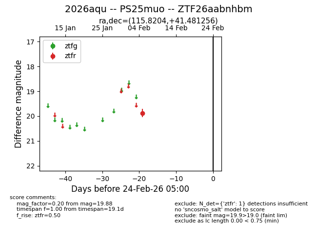
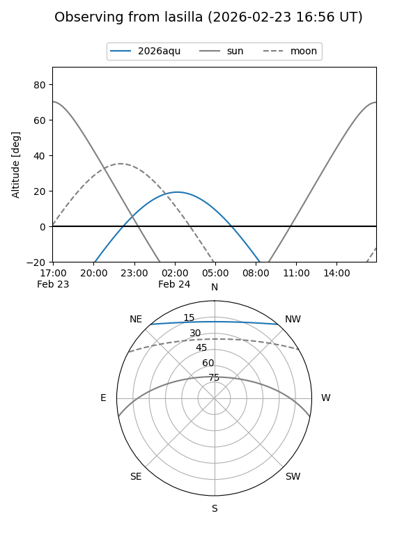
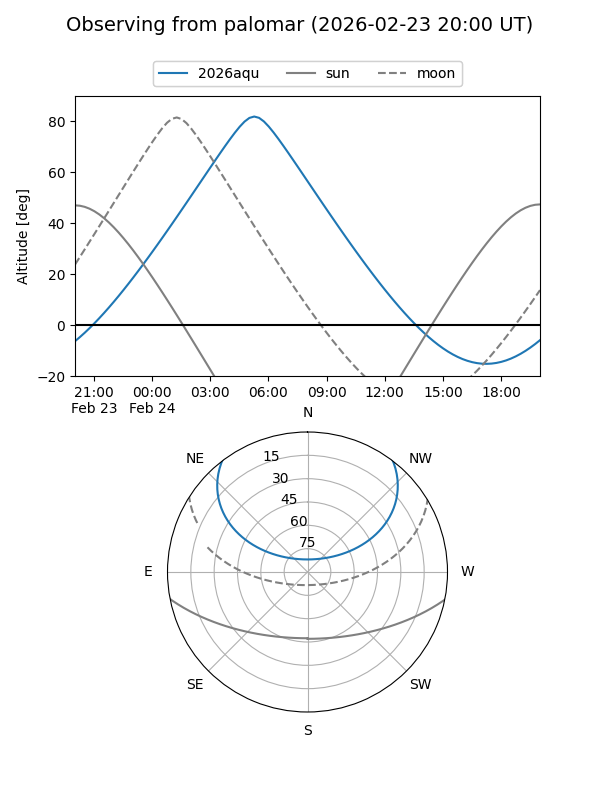

2026aqu
Target 2026aqu at 2026-02-24 09:08
Aliases and brokers:
FINK: link
Lasair: link
ALeRCE: link
TNS: link
YSE: link
alt names
ZTF26aabnhbm (ztf,fink_ztf)
2026aqu (tns,yse)
PS25muo (panstarrs)
Coordinates:
equatorial (ra, dec) = 115.8204,+41.48126
equatorial (HMS+DMS) = 07:43:16.91,+41:28:52.52
galactic (l, b) = (177.8438,+26.84489)
Flags:
Photometry:
last ztfr=19.88
1 ztfr detections
Lightcurve

Visibility


Additional plots